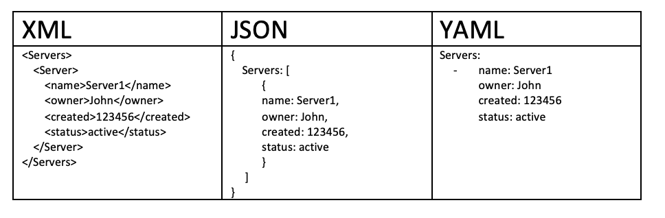

YAMLの正式名称YAML Ain't Markup Language（再帰的略語の一種）で、人間が読みやすいデータシリアライズ形式です。
YAMLは、設定ファイル、データ交換、および構造化された形式でデータを保存する必要があるさまざまな場面でよく使用されます。
YAMLの構文は他の高級言語と似ており、リスト、ハッシュテーブル、スカラーなどのデータ形式を簡単に表現できます。
空白文字によるインデントと外観に大きく依存する特徴を備えており、データ構造、各種設定ファイル、デバッグ内容のダンプ、ファイルのアウトラインを表現・編集するのに特に適しています。
YAMLの設定ファイルの拡張子は.yml、例：runoob.yml 。

YAMLの特徴と利点
YAMLの設計目標は、可読性が高く、構文が簡潔で、自然言語の書き方に近く、ほとんど追加の記号を必要としないことです。
XMLやJSONと比較すると、YAMLは括弧や引用符を大幅に減らし、より簡単に書くことができます。
複雑なデータ構造をサポートし、リスト、辞書、ネスト構造を表現できるだけでなく、参照やアンカーなどの高度な機能もサポートしています。
ほぼすべての主要プログラミング言語にYAMLを解析するライブラリがあり、言語エコシステムは非常に成熟しています。
YAMLとJSON、XMLの比較
3つの形式にはそれぞれ重点があり、以下の表で複数の側面から比較しています。
| 特性 | YAML | JSON | XML |
|---|---|---|---|
| 可読性 | 高 | 中 | 低 |
| コメント対応 | 対応 | 非対応 | 対応 |
| 構文の複雑さ | 低 | 中 | 高 |
| 一般的な用途 | 設定ファイル | データ交換/API | ドキュメント/データ交換 |

YAMLの一般的な応用シーン
YAMLは現代の開発スタックのほぼ至る所で使用されています。以下は最も一般的なシナリオです。
アプリケーションの設定ファイル。例：Spring Boot のapplication.yml。
コンテナオーケストレーションツール。例：Docker Compose、Kubernetes のデプロイメント記述ファイル。
CI/CDパイプライン設定。例：GitHub Actions、GitLab CI、CircleCI のワークフロー定義。
静的サイトジェネレーターのFront Matter。例：Jekyll、Hugo のページメタデータ。
基本構文規則
YAMLの最も基本的な記述規則（インデント、コメント、ファイル構造など）を習得します。
インデントの規則
YAMLはスペースを使用してインデントを行い、階層関係を表します。Tabキーは使用できません。。
同じ階層の要素は同じインデント量を維持する必要があります。通常はインデント単位として2スペースを使用することをお勧めします。
person: name: 张三 age: 25
基本構文
以下はYAMLの最も中心的な構文規則です。しっかり覚えておく必要があります。
- 大文字と小文字を区別する
- インデントを使用して階層関係を表す
- インデントにTabは使用できず、スペースのみ許可される
- インデントのスペース数は重要ではなく、同じ階層の要素が左揃えであればよい
- #コメントを表す
- :記号の後にはスペースを入れる必要があります
大文字と小文字の区別
YAMLのキー名や文字列などは大文字と小文字を区別します。
Name 和 nameは2つの異なるキーとして扱われるため、記述時に一貫性に注意する必要があります。
コメントの書き方
使用#で始まる内容はコメントです。コメントは単独で1行に書くことも、内容の後ろに書くこともできます。
# 这是一行注释 name: 张三 # 这也是注释
ファイル拡張子
YAMLファイルは通常.yaml 或 .ymlを拡張子として使用します。両者に本質的な違いはなく、プロジェクトの習慣によります。
ドキュメント区切り文字
---新しいドキュメントの開始を示すために使用され、複数ドキュメントのファイルで特に重要です。
...ドキュメントの終了を示すために使用され、任意のマーカーです。
--- doc: 第一个文档 --- doc: 第二个文档
基本データ型
YAMLは文字列、数値、ブール値、nullなどの基本データ型をサポートしており、各型には特定の記述方法があります。
データ型の概要
YAMLは以下のデータ型をサポートしています：
- オブジェクト：キーと値のペアの集合。マッピング（mapping）/ ハッシュ（hashes）/ 辞書（dictionary）とも呼ばれます。
- 配列：順序に並んだ値の集まり。シーケンス（sequence）/ リスト（list）とも呼ばれます。
- スカラー（scalars）：単一で、それ以上分割できない値
スカラー（Scalar）
スカラーはYAMLの最も基本的なデータ単位であり、以下の種類に分けられます：
文字列
文字列は引用符なしでも、二重引用符または一重引用符で囲んでも構いません。
二重引用符はエスケープ文字をサポートします（例：\n）。一重引用符はエスケープをサポートしません。
name: 张三 # 不加引号 name: "张三" # 双引号，支持转义字符 name: '张三' # 单引号，不支持转义
数値
YAMLは整数と浮動小数点数を自動的に認識するため、型を明示的に宣言する必要はありません。
age: 25 # 整数 price: 19.99 # 浮点数
ブール値
ブール値はtrue 和 falseで表します。
is_active: true is_deleted: false
null値
null値はnull、~または何も書かないことで表します。
value: null value: ~ value: # 什么都不写也表示 null
スカラー総合例
以下の例は、ブール値、浮動小数点数、整数、null値、文字列、日付と時刻など、すべてのスカラー型の使用方法を示しています。
boolean:
- TRUE # true,True 都可以
- FALSE # false,False 都可以
float:
- 3.14
- 6.8523015e+5 # 可以使用科学计数法
int:
- 123
- 0b1010_0111_0100_1010_1110 # 二进制表示
null:
nodeName: 'node'
parent: ~ # 使用 ~ 表示 null
string:
- 哈哈
- 'Hello world' # 可以使用双引号或者单引号包裹特殊字符
- newline
newline2 # 字符串可以拆成多行，每一行会被转化成一个空格
date:
- 2018-02-17 # 日期必须使用 ISO 8601 格式，即 yyyy-MM-dd
datetime:
- 2018-02-17T15:02:31+08:00 # 时间使用 ISO 8601 格式，时间和日期之间使用 T 连接，最后使用 + 代表时区
日付と時刻はISO 8601形式を使用する必要があります。日付形式はyyyy-MM-dd、時刻形式はyyyy-MM-ddTHH:mm:ss+タイムゾーン、間はTで接続します。
複数行文字列
YAMLには複数行文字列の2つの記述方法があり、それぞれ異なるシナリオに適しています。
折りたたみスタイル（>）
使用すると、>記号は複数行のテキストを1行に折りたたみ、改行はスペースに置き換えられます。
description: > 这是第一行 这是第二行 这是第三行
上記の書き方は次と同等です："这是第一行 这是第二行 这是第三行\n"
改行保持スタイル（|）
使用すると、|記号は元の改行を保持し、複数行のテキスト（スクリプト内容など）を書くのに適しています。
script: | echo "第一行" echo "第二行" echo "第三行"
| と > の比較
以下、同じ内容を使ってFoo\nBar2つの書き方の違いを比較します：
this: | Foo Bar that: > Foo Bar
JavaScriptコードに変換すると次のようになります：
{ this: 'Foo\nBar\n', that: 'Foo Bar\n' }
わかるように、|は改行を保持し、結果はFoo\nBar\n；一方、>は改行をスペースに折りたたみ、結果はFoo Bar\n。
選択>または|はあなたのニーズによって異なります。複数行の内容を1つの段落にまとめる必要がある場合は、使用します>；元の改行形式を保持する必要がある場合（スクリプト、詩など）は、使用します|。
複合データ構造
YAMLはマッピングとシーケンスの2つの複合構造をサポートしており、これらは自由にネストして任意の複雑なデータ関係を表現できます。
マッピング（Mapping / 辞書）
マッピングはキーと値のペアの集合であり、YAML で最もよく使われるデータ構造です。
基本的なキーと値のペアの書き方
name: 张三 age: 25 city: 北京
ネストされたマッピング
インデントを使用することで、マッピングの中に別のマッピングをネストし、階層構造を形成できます。
person:
name: 张三
address:
city: 北京
zipcode: "100000"
フロー形式のマッピングの書き方
使用できるのはkey:{key1: value1, key2: value2, ...}のフロー形式の書き方です。
key: {child-key: value, child-key2: value2}
複雑なキー（Complex Key）
疑問符とスペースで複雑なキーを表し、コロンとスペースで値を表します：
?
- complexkey1
- complexkey2
:
- complexvalue1
- complexvalue2
つまり、オブジェクトのプロパティは配列であり、[complexkey1, complexkey2]対応する値も配列です。[complexvalue1, complexvalue2]。
シーケンス（Sequence / リスト）
シーケンスは-プレフィックスで表され、順序付きデータの集合を格納するために使用します。
基本的なリストの書き方
fruits: - 苹果 - 香蕉 - 橙子
ネストされたリスト
matrix: - [1, 2, 3] - [4, 5, 6] - [7, 8, 9]
多次元配列
YAML は多次元配列をサポートしており、インライン形式で表すことができます：
key: [value1, value2, ...]
データ構造の子メンバーが配列である場合、その項目の下に1スペース分インデントして記述できます：
- - A - B - C
配列要素がオブジェクトである複雑な例
よくある実際のシナリオ：配列の各要素が複数の属性から構成されるオブジェクトである場合：
companies:
-
id: 1
name: company1
price: 200W
-
id: 2
name: company2
price: 500W
つまりcompaniesプロパティは配列であり、各配列要素はさらにid、name、priceの3つの属性で構成されています。
配列もフロー形式で表すことができます：
companies: [{id: 1,name: company1,price: 200W},{id: 2,name: company2,price: 500W}]
マッピングとシーケンスの併用
マッピングとシーケンスは柔軟に組み合わせることで、複雑なデータ構造を表現できます。
students:
- name: 张三
age: 20
subjects:
- 数学
- 英语
- name: 李四
age: 22
subjects:
- 物理
- 化学
上記の例では、studentsはシーケンスであり、各要素はマッピングです。マッピング内のsubjectsもまたシーケンスです。このようなネストの組み合わせは、YAML の表現力の中核です。
複合構造の例
配列とオブジェクトは複合構造を構成できます。以下はリストとマッピングの両方を含む例です：
languages: - Ruby - Perl - Python websites: YAML: yaml.org Ruby: ruby-lang.org Python: python.org Perl: use.perl.org
JSON に変換すると次のようになります：
{
languages: [ 'Ruby', 'Perl', 'Python'],
websites: {
YAML: 'yaml.org',
Ruby: 'ruby-lang.org',
Python: 'python.org',
Perl: 'use.perl.org'
}
}
フロー（Flow）構文
ブロック形式の書き方に加えて、YAML は JSON に似たフロー形式の書き方もサポートしており、コンパクトなシーンに適しています。
フローマッピング
波括弧{}でキーと値のペアを囲み、カンマで区切ります。
person: {name: 张三, age: 25, city: 北京}
フローリスト
角括弧[]で要素を囲み、カンマで区切ります。
fruits: [苹果, 香蕉, 橙子]
フローとブロックの比較と使用例
| スタイル | 特徴 | 適用シーン |
|---|---|---|
| ブロック形式（Block） | 可読性が高く、階層が明確 | 構造が複雑で階層が深いデータ |
| フロー形式（Flow） | よりコンパクトで、1行で表現可能 | 単純なデータ、またはブロック構造に埋め込む小規模なデータ |
2つのスタイルを混在させることもできます：
users:
- {name: 张三, age: 25}
- {name: 李四, age: 30}
高度な機能
YAML はアンカー、参照、マージキーなどの高度な機能を提供し、重複する内容を減らすのに役立ちます。
アンカーと参照
を使用して&アンカーを定義し、*でアンカーを参照することで、同じ内容を繰り返し記述することを避けられます。
default_settings: &defaults adapter: postgres host: localhost development: <<: *defaults database: dev_db test: <<: *defaults database: test_db
上記の例では、&defaultsでアンカーを定義しています。*defaultsでそのアンカーの内容を参照しています。<<は現在のデータにマージすることを表します。
上記の設定を展開すると、次のようになります：
defaults: adapter: postgres host: localhost development: database: myapp_development adapter: postgres host: localhost test: database: myapp_test adapter: postgres host: localhost
リスト内のアンカー参照
アンカーはリスト内でも使用できます：
- &showell Steve - Clark - Brian - Oren - *showell
JavaScript の配列に変換すると次のようになります：
[ 'Steve', 'Clark', 'Brian', 'Oren', 'Steve' ]
キーのマージ
<<は、あるマッピングの内容を現在のマッピングにマージするために使用され、通常はアンカーと組み合わせて使用します。
マージキー<<は YAML 1.1 仕様の機能であり、ほとんどの YAML パーサーでサポートされています。これにより設定ファイルをより簡潔にできますが、JSON 仕様の一部ではないため、JSON に変換すると実際の内容に展開されることに注意してください。
マルチドキュメント対応
1つの YAML ファイル内で、---を使用して複数の独立したドキュメントを区切って格納できます。これは Kubernetes の設定ファイルでよく見られます。
--- kind: Pod metadata: name: pod-1 --- kind: Pod metadata: name: pod-2
タグと型変換
YAML はタグ（Tag）によってデータ型を明示的に指定でき、!!プレフィックスで宣言します。
explicit_string: !!str 123 explicit_int: !!int "123" explicit_float: !!float "3.14"
よく使われるタグには、!!str（文字列）、!!int（整数）、!!float（浮動小数点数）、!!bool（ブール値）、!!null（null 値）などがあります。
よくあるエラーと注意点
YAML は書式に非常に敏感です。以下は最も一般的なエラーの種類とその回避方法です。
インデントエラーによる解析失敗
YAML はインデントに非常に敏感です。同じ階層のインデント量は完全に一致している必要があり、そうでないと解析エラーが発生します。
# 错误示例：缩进不一致 person: name: 张三 age: 25 # 缩进多了一个空格，会报错
タブとスペースの混在問題
YAML 仕様では明確にインデントに Tab を使用することは許可されていません。スペースに統一する必要があり、そうしないとほとんどのパーサーでエラーになります。
エディターで「Tab をスペースに変換」設定を有効にし、誤って Tab 文字が混入するのを防ぐことをお勧めします。最新のエディターのほとんどは.yaml 和 .ymlファイルに対してこの設定を自動的に有効にできます。
特殊文字のエスケープ問題
文字列に:、#、{、}、[、]などの特殊文字が含まれる場合、パーサーによる誤判定を避けるために、文字列を引用符で囲むことをお勧めします。
title: "标题: 副标题" # 冒号需要用引号包裹 tag: "#重要" # 井号需要用引号包裹，否则会被当作注释
文字列に引用符が必要なケース
以下の場合は、YAML パーサーが誤った型推論を行わないように、明示的に引用符を付けることをお勧めします：
| シーン | 例 | 説明 |
|---|---|---|
| 数字で始まる文字列 | "100000" | 引用符がないと数値として解析される |
| 混同しやすいブール値の語句 | "true"、"false"、"yes"、"no" | 引用符がないとブール値として解析される |
| null 値を表す語句 | "null"、"~" | 引用符がないと null として解析される |
| 特殊記号を含む | 「タイトル: サブタイトル」 | コロンやハッシュ記号などが構文記号として誤判定される |
実践応用
実際の場面での完全な例を通じて、実プロジェクトにおける YAML の使い方を理解します。
簡単な設定ファイルを書く
以下は典型的なアプリケーション設定ファイルで、実際のプロジェクトにおける YAML の一般的な構造を示しています：
# 应用基本配置 app: name: MyApplication version: 1.0.0 debug: false # 数据库连接配置 database: host: localhost port: 5432 username: admin password: "secret" # 日志配置 logging: level: info file: /var/log/app.log
Docker Compose における YAML の応用
Docker Compose は YAML を使用して、複数コンテナアプリケーションのサービスオーケストレーションを定義します：
version: "3"
services:
web:
image: nginx:latest
ports:
- "80:80"
db:
image: mysql:8.0
environment:
MYSQL_ROOT_PASSWORD: example
Kubernetes における YAML の応用
Kubernetes は YAML を使用してさまざまなリソースオブジェクトを定義します。以下は Pod の定義例です：
apiVersion: v1
kind: Pod
metadata:
name: nginx-pod
spec:
containers:
- name: nginx
image: nginx:latest
ports:
- containerPort: 80
GitHub Actions における YAML の応用
GitHub Actions は YAML を使用して CI/CD ワークフローを定義します：
name: CI
on: [push, pull_request]
jobs:
build:
runs-on: ubuntu-latest
steps:
- uses: actions/checkout@v3
- name: Run tests
run: npm test
ツールと検証
YAML ファイルをより効率的に作成・検証するのに役立つ、実用的な YAML ツールとリソースを紹介します。
オンラインYAML検証ツール
YAML Lint は最もよく使われるオンライン検証ツールです。「yamllint online」を検索すると、利用可能なオンライン検証サイトが見つかります。
各種 IDE にも YAML 構文チェック機能が組み込まれており、作成時にリアルタイムでエラーを表示できます。
主要プログラミング言語でYAMLを解析するライブラリ
| 言語 | よく使われるライブラリ | 特徴 |
|---|---|---|
| Python | PyYAML、ruamel.yaml | PyYAML が最も人気で、ruamel.yaml は YAML 1.2 をサポート |
| JavaScript / Node.js | js-yaml | ブラウザと Node.js 環境の両方で使用可能 |
| Java | SnakeYAML | Spring Boot がデフォルトで使用する YAML 解析ライブラリ |
| Go | gopkg.in/yaml.v3 | Go エコシステムで最もよく使われる YAML ライブラリ |
| Ruby | Psych | 標準ライブラリに組み込まれており、追加インストール不要 |
エディタプラグインの推奨
| エディター | 推奨プラグイン | 機能 |
|---|---|---|
| VSCode | Red Hat の YAML プラグイン | 構文ハイライト、フォーマット検証、スキーマ検証 |
| IntelliJ IDEA / PyCharm | 組み込みサポート | 追加インストール不要で、すぐに使用可能 |
| Sublime Text | YAML 関連プラグイン | 構文ハイライトとフォーマット機能を強化 |
クリックしてノートを共有
<p style="font-size:14px;">ノートは本記事の内容の拡張である必要があります！</p><br> <p style="font-size:12px;"><a href="../tougao.html" target="_blank">記事投稿は、ここをクリック</a></p> <p style="font-size:14px;"><a href="./runoob-user-test-intro.html" target="_blank">登録招待コードの取得方法</a></p> <h3 class="text-muted"><i class="fa fa-info-circle" aria-hidden="true"></i> ノートを共有する前に<a href=".." class="runoob-pop">ログイン</a>！</h3> <p><a href="./runoob-user-test-intro.html" target="_blank">登録招待コードの取得方法</a></p>